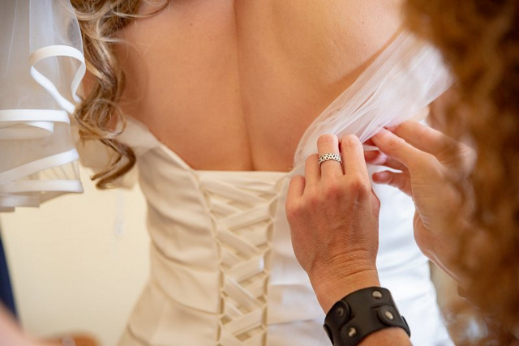

Vom Laufsteg in Barcelona bis zur spontanen Partyaufnahme: sechs Impulse und die Frage, was davon zu euch passt.

STILNOTIZENHeute inspiriert. Morgen euer Tag.
01 / WANDELBARE LOOKS
Ein Kleid. Mehr als ein Auftritt.
Abnehmbare Ärmel, Überröcke und zusätzliche Lagen gehören zu den im April 2026 gezeigten Ansätzen für 2027. Ein Grundkleid kann so mehrere Auftritte ermöglichen.
Für eure Planung
Probiert bei der Anprobe beide Varianten. Wer hilft beim Umbau? Wohin mit dem Überrock? Ein Wechsel funktioniert im Alltag nur, wenn Verschlüsse, Bewegungsfreiheit und Aufbewahrung mitgedacht sind.
Tief angesetzte Taillen und neu interpretierte Korsagen setzen in den vorgestellten Kollektionen andere Proportionen. Dazu kommen sowohl fließende als auch bewusst voluminöse Röcke.
Für eure Planung
Vergleicht eine tiefe mit einer natürlichen Taille im selben Termin. Setzt euch hin und geht ein paar Schritte. Ein markanter Schnitt soll euch durch den Tag begleiten können.
Florale Applikationen, Stickereien und handgemalte Blüten bringen Struktur auf Kleider. Auch Capes und auffällige Kopfbedeckungen ergänzen den klassischen Schleier.
Für eure Planung
Wenn das Kleid viele Details trägt, testet den Look zunächst mit schlichtem Schmuck. Betrachtet Applikationen aus der Nähe und aus einigen Metern Entfernung: Die Wirkung kann deutlich anders sein.
Pronovias verbindet in seiner Preview 2027 Korsagenkonstruktion mit fließenden Drapierungen. Mikroplissierter Organza und kristalline Details setzen Akzente. Das ist ein konkretes Kollektionsbeispiel, keine Aussage über alle Brautkleider.
Für eure Planung
Seht euch Stoffe bei Tageslicht an. Lasst euch erklären, wie Unterfütterung und Änderungen die Transparenz beeinflussen. Entscheidend ist die Wirkung am Körper, nicht nur auf einem Laufstegfoto.
Die US-Befragung zu Hochzeiten 2025 und der Ausblick auf 2026 beschreiben eine stärkere Ausrichtung an persönlichen Vorstellungen. Diese Beobachtung ist ein internationaler Impuls und keine repräsentative Aussage über Deutschland.
Für eure Planung
Wählt gemeinsam drei Dinge, die euch wirklich wichtig sind. Baut euren Ablauf darum auf. Eine gemeinsame Lieblingsspeise oder eine persönliche Musikauswahl kann mehr erzählen als ein zusätzlicher Programmpunkt.
Der Ausblick nennt spontane Blitzfotografie und mehrere Outfitwechsel als aufkommende Wünsche. Gemeint ist eine beobachtete Tendenz aus dem US-Markt, kein Pflichtprogramm für eure Hochzeit.
Für eure Planung
Besprecht anhand vollständiger Reportagen, welche Bildsprache euch gefällt. Direkter Blitz kann zur Party passen; für die Trauung und ruhige Momente darf die Bildgestaltung eine andere sein.
Recherche: 16. September 2026. Die Fotos zeigen Motive aus eigenen Hochzeitsreportagen und illustrieren die Themen; sie zeigen keine der genannten Laufstegkollektionen. US-Erhebungen sind keine repräsentativen Aussagen über Hochzeiten in Deutschland.
Ihre Privatsphäre
Aktuell verwenden wir kein Analyse- oder Werbetracking. Wir speichern nur Ihre bestätigte Einstellung. Google Analytics ist geplant, aber nicht aktiv. Datenschutz · Impressum